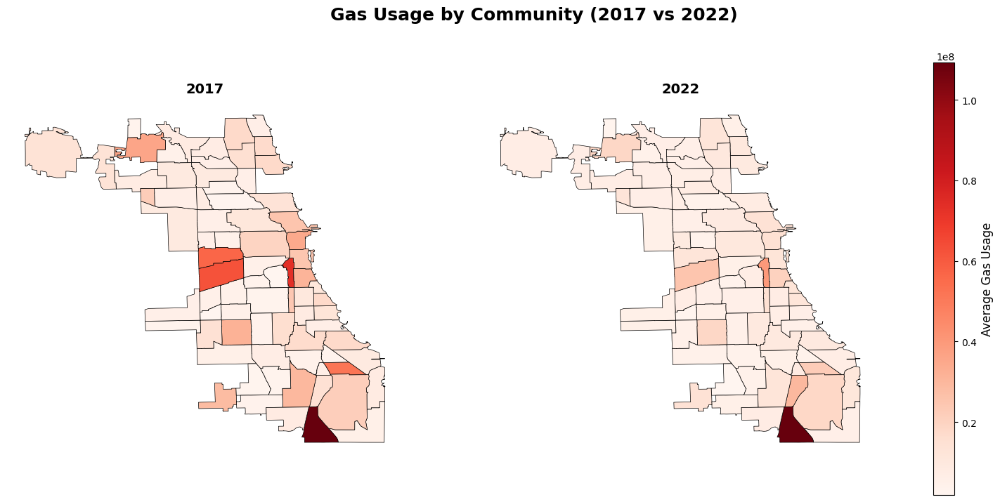
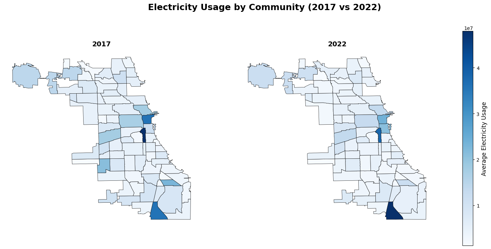
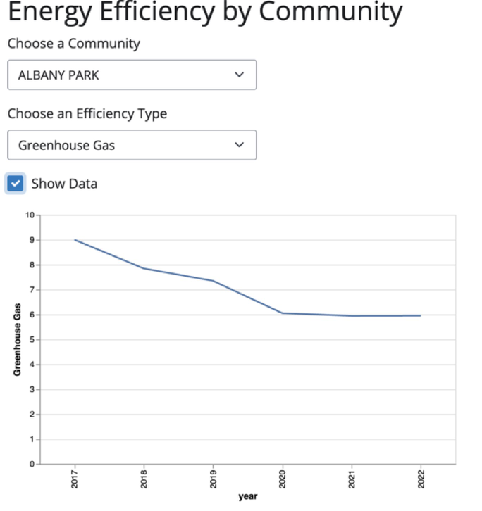
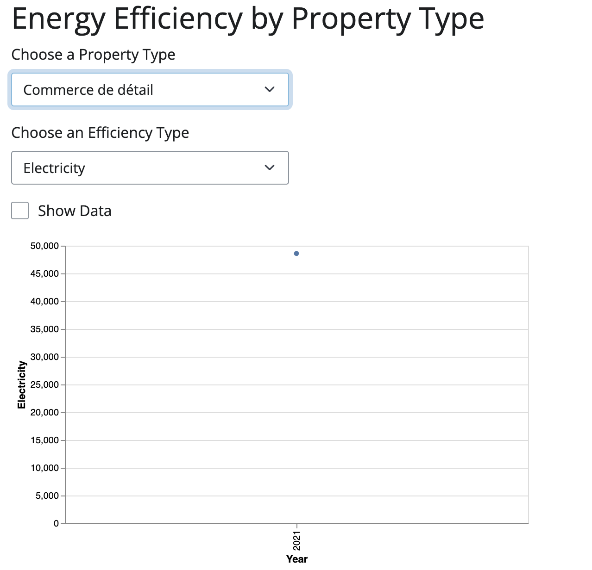
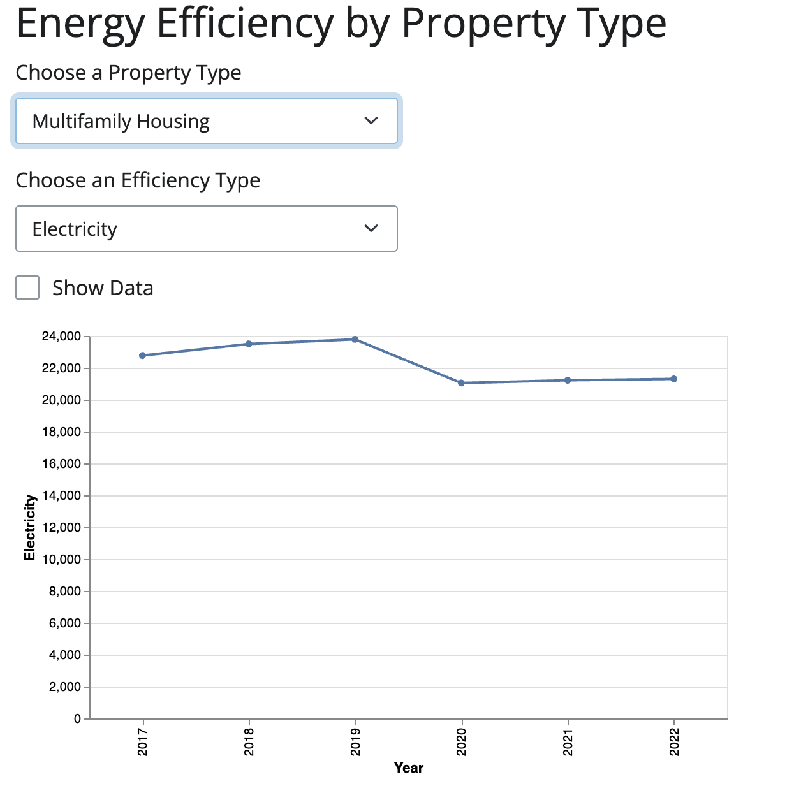

30538 Final Project: Group 33
Partern 1: Dale Jin (Github ID: dalejin86): data cleaning and choropleth plot
Partern 2: Katherine Tu (Github ID: kattu1): dynamic plots
Partern 3: Yuliana Zhang (Github ID: YuejiuZHANG): coding adjustment, writeup and repository management
Research Question
In 2008, Chicago adopted the Chicago Climate Action Plan (CCAP), which aimed to reduce the city’s greenhouse gas emissions by 25% compared to 1990 levels by 2020. Initially, adaptive strategies were implemented, such as the installation of green roofs and reflective roofs on buildings. These measures aimed to reduce heat absorption, enhance urban cooling, and provide immediate relief from rising temperatures. However, the city claimed that these actions as temporary solutions and in 2020, Chicago launched the Chicago Retrofit Roadmap, a three-year project to reduce carbon emissions at their source.
To evaluate the effectiveness and necessity of Chicago’s evolving climate policies, our research seeks to answer the following questions:
Did the 2008 CCAP continually reduce Chicago’s greenhouse gas emissions before 2020?
Can the Chicago Retrofit Roadmap further reduce carbon emissions and provide sustainable long-term solutions?
Research Method And Coding Instructions
To address the research questions, we aimed to uncover trends in greenhouse gas emissions, electricity usage, and natural gas consumption in Chicago. We used data visualizations to evaluate the impact of the 2008 Climate Action Plan (CCAP) before 2020 and the Chicago Retrofit Program after 2020.
Due to limited public data, we used the Chicago Energy Benchmarking Report, which contains self-reported energy data from existing buildings, collected annually since 2014. Our analysis focused on data from 2017 to 2022 to easily divide trends into three years before and after 2020. Since the dataset only contained 8,113 parcel-level observations—about 1% of Chicago’s buildings—we concentrated on identifying overarching trends, using an efficiency metric derived from the available data.
We started the coding process by loading and merging multiple datasets, then filtered and renamed columns to standardize variable names for easier analysis. Data cleaning included handling missing values, standardizing community names, and creating new metrics like efficiency based on energy usage and floor area. We also binned geographical coordinates to facilitate spatial analysis.
After data cleaning, we generated geometric maps of greenhouse gas emissions, gas consumption, and electricity consumption in Chicago by communities for 2017 and 2022 to observe changes. We also created a dynamic plot to visualize community-level trends from 2017 to 2022 by property types. However, while conducting this plot, a significant challenge was managing data inconsistencies, such as missing or incorrect values, which required substantial preprocessing to ensure accurate results. Although we finally successfully drew this plot, we could not sum up any trends. To investigate patterns further, we additionally filtered the top 500 least efficient buildings and mapped them to identify property types of concerns.
Results
Our main focus, the greenhouse gas emissions map, demonstrates a decrease in emissions from 2017 to 2022 across various communities, especially in areas like the Loop. This suggests that the 2008 CCAP and the Chicago Retrofit Roadmap initiatives to curb emissions have been somewhat effective, though several communities still need more targeted interventions to achieve substantial reductions. Similar results can also be drawn from gas and electric consumption. These three independent variables have almost the same pattern between the graphs from 2017 and 2022.


We built two Shiny apps to explore energy efficiency trends across different communities and property types in Chicago. After selecting a specific community and an efficiency type (Electricity, Gas, or Greenhouse Gas), we can observe the corresponding line chart, which shows the yearly changes in efficiency metrics from 2017 to 2022. The app also provides a data table next to the graph, displaying each year’s efficiency values.



From these two Shiny apps, we observed that most of the communities’ GHG emissions were reduced from 2017 to 2022, and 2020-2022 reduced more sharply than 2017-2020. This implicated that both the 2008 CCAP and Chicago Retrofit maps work. Besides,as the second Shiny app cannot clearly show the patterns as it lacks data on some property types, and most trends are increasing, we filtered the top 500 least efficient buildings. Through this new Shiny app, we can clearly see that multifamily housing, offices, and K12 Schools are the top 3 least efficient property types.

Further Discussion for Furture Work
For future improvements, we plan to expand our dataset to include more building types and data beyond 2022 to further explore the impact of the Chicago Retrofit Roadmap. Additionally, we aim to acquire 1990 data to assess whether the 2020 levels of emissions and energy usage are indeed 25% of those in 1990, as outlined in Chicago’s climate goals. Furthermore, we need to develop a more sophisticated model to better distinguish the effects of the 2008 CCAP and the Chicago Retrofit Roadmap, ensuring that we can accurately attribute observed changes to each initiative. This will help us more precisely evaluate the effectiveness of these policies and provide more targeted recommendations for future climate action.